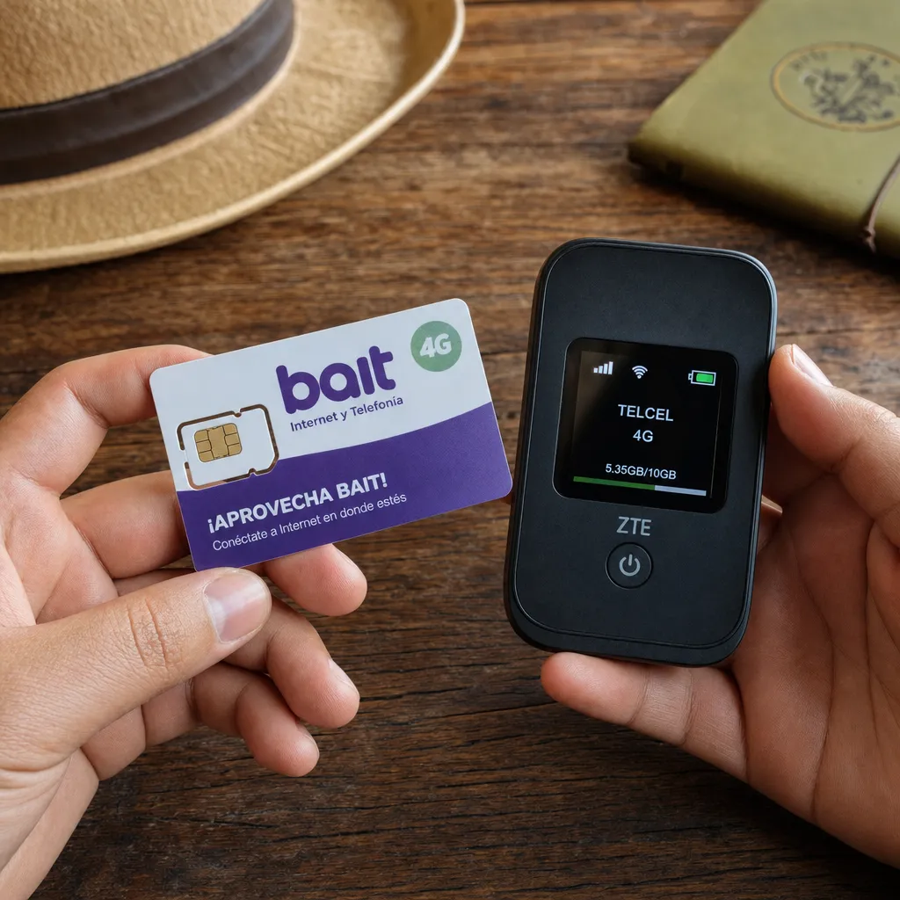

Internet sin Contrato en México 2026: Opciones, Precios y Cómo Elegir

Internet sin Contrato en México 2026: Opciones, Precios y Cómo Elegir

¿Se puede tener internet sin contrato en México en 2026? La respuesta es sí, pero con limitaciones. Mientras la mayoría de proveedores de internet fijo (Totalplay, izzi, Telmex) requieren contrato de 12 meses, existen alternativas reales: internet móvil prepago, planes de datos ilimitados y internet satelital sin compromiso. En esta guía desglosamos todas las opciones disponibles en 2026.
¿Por Qué Querer Internet sin Contrato?
- Flexibilidad: Mudanzas frecuentes o trabajo temporal en una ciudad
- No querer compromisos: Preferencia por pagar mes a mes sin ataduras
- Malas experiencias previas: Penalizaciones injustas o dificultad para cancelar
- Uso temporal: Vacaciones, temporada de trabajo, proyecto de corto plazo
- Precaución: Quieres probar el servicio antes de comprometerte a 12 meses
Opciones Reales de Internet sin Contrato en México 2026
1. Internet Móvil Prepago (La Opción Más Popular)
Las operadoras móviles ofrecen datos ilimitados o planes de alto volumen sin contrato. Es la alternativa más accesible y flexible.
| Operadora | Plan | Datos | Precio/Mes | Sin Contrato |
|---|---|---|---|---|
| AT&T | Unefon Ilimitado | Ilimitados (reducen a 3 Mbps tras 50 GB) | $299 MXN | ✅ Sí |
| Movistar | Prepago Ilimitado | Ilimitados (reducen tras 35 GB) | $349 MXN | ✅ Sí |
| Telcel | Amigo Sin Límite | Ilimitados (reducen tras 50 GB) | $399 MXN | ✅ Sí |
| Virgin Mobile | Ilimitado | Ilimitados (reducen tras 30 GB) | $249 MXN | ✅ Sí |
Cómo funciona: Compras una SIM prepago, recargas mensualmente y usas tu celular como hotspot (tethering) o compras un modem 4G/5G (compatible con cualquier SIM) para usarlo como router de casa.
2. Módem 4G/5G + Plan de Datos
En lugar de depender de tu celular, compras un módem portátil (MiFi) o un router 4G/5G y le insertas una SIM prepago.
- Equipo: TP-Link M7350 ($1,200 MXN) o Huawei B311 ($1,500 MXN)
- SIM: Cualquiera de las opciones prepago de la tabla anterior
- Velocidad: 10-100 Mbps dependiendo de cobertura 4G/5G en tu zona
- Ideal para: 1-3 personas con uso moderado
3. Starlink – Internet Satelital sin Contrato
Starlink no requiere contrato a largo plazo. Puedes cancelar cuando quieras.
- Costo inicial: $2,300 MXN (antena + envío)
- Mensualidad: $1,100 MXN/mes
- Sin contrato: Pausa o cancela cuando quieras desde la app
- Velocidad: 50-250 Mbps
- Ideal para: Zonas rurales o donde no hay fibra/cable
4. Infinitum por Cobre (Sin Promociones)
Telmex permite contratar Infinitum básico sin promociones ni contrato forzoso, aunque técnicamente hay un acuerdo de servicio.
- Velocidad: 20 Mbps (limitado por cobre)
- Precio: $389 MXN/mes
- Sin promociones: Puedes cancelar sin penalización si no aceptaste promociones con plazo forzoso
- Truco: Especifica al contratar que NO quieres promociones con compromiso
5. WiFi Compartido de Vecinos/Compañeros
Aunque no es una opción "oficial", muchas personas comparten el costo del internet con vecinos o roommates. Si alguien ya tiene Totalplay o izzi, puedes:
- Pagar la mitad del costo mensual
- Usar un repetidor WiFi para mejorar señal
- Instalar una segunda red en el mismo módem (la mayoría de routers modernos permiten esto)
Tabla Comparativa: Internet sin Contrato 2026
| Opción | Costo Inicial | Costo Mensual | Velocidad | Ideal Para |
|---|---|---|---|---|
| AT&T Prepago + Módem | $1,200-$1,500 | $299 | 10-50 Mbps | Uso básico, 1-2 personas |
| Movistar Prepago + Módem | $1,200-$1,500 | $349 | 10-50 Mbps | Uso moderado, 2-3 personas |
| Virgin Mobile + Módem | $1,200-$1,500 | $249 | 10-30 Mbps | Uso básico, 1 persona |
| Starlink | $2,300 | $1,100 | 50-250 Mbps | Zonas rurales, sin contrato |
| Infinitum Básico | $0 | $389 | 20 Mbps | Navegación básica, sin contrato forzoso |
Ventajas y Desventajas del Internet sin Contrato
✅ Ventajas
- Sin compromisos: Cancela cuando quieras sin penalizaciones
- Flexibilidad: Ideal para personas que se mudan frecuentemente
- Prueba primero: Puedes probar el servicio un mes y cambiar si no te convence
- Sin historial crediticio: No requiere investigación buró de crédito
- Control total: Pagas solo lo que usas, mes a mes
❌ Desventajas
- Velocidad limitada: El internet móvil es más lento y estable que fibra/cable
- Datos reducidos: Después de cierto límite, tu velocidad baja drásticamente
- Sin servicio garantizado: La calidad depende de la cobertura celular en tu zona
- No ideal para gaming/streaming 4K: Latencia alta y posible buffering
- Costo por GB más alto: Si consumes muchos datos, sale más caro que un plan fijo
Preguntas Frecuentes
¿Totalplay o izzi tienen opciones sin contrato?
No. Todos los planes residenciales de Totalplay e izzi requieren contrato de 12 meses. No ofrecen opciones prepago ni sin compromiso para internet fijo.
¿Cuál es el internet más barato sin contrato?
Virgin Mobile prepado ($249 MXN/mes) es la opción más barata, pero limita velocidad tras 30 GB. AT&T Unefon ($299 MXN/mes) ofrece mejor relación costo-datos.
¿Puedo usar internet móvil para ver Netflix?
Sí, pero con limitaciones. Netflix en HD consume aproximadamente 3 GB por hora. Un plan de 50 GB te duraría unos 16 horas de streaming. Para uso diario, necesitarías varias líneas o aceptar la reducción de velocidad.
¿Starlink realmente no tiene contrato?
Correcto. Starlink cobra mensualidad y puedes pausar o cancelar cuando quieras desde la app. El único "compromiso" es la inversión inicial de $2,300 MXN en la antena.
¿Qué pasa si cancelo un plan con contrato antes de tiempo?
Depende del proveedor:
- Totalplay: Penalización de meses restantes o tarifa plana de $3,000-$5,000 MXN
- izzi: Similar a Totalplay, varía según promoción
- Infinitum: Generalmente más flexible, a veces sin penalización si no hay promoción activa
Conclusión
El internet sin contrato en México es posible pero limitado. Las mejores opciones son:
- AT&T/Movistar prepago + módem 4G: La solución más accesible para uso moderado
- Starlink: La única opción de alta velocidad sin contrato (pero costosa)
- Infinitum básico sin promociones: Una alternativa subestimada si solo necesitas navegar
Recomendación: Si tu presupuesto es ajustado y no necesitas streaming 4K, AT&T Unefon prepago + un módem 4G te da internet funcional por $299/mes sin contratos ni historial crediticio.